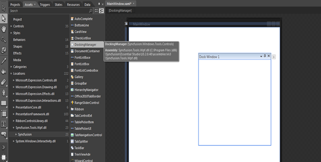

The Docking Manager control can also be created and configured using Expression Blend. Follow these steps to do so.
1. Create a WPF project in Expression Blend and reference the following assemblies.
· Syncfusion.Tools.Wpf
· Syncfusion.Shared.Wpf
2. Search for DockingManager in the Toolbox.
3. Drag the DockingManager to the designer. It will generate the following Docking Manager control with one child element.

Figure 303: Adding Docking Manager through Expression Blend